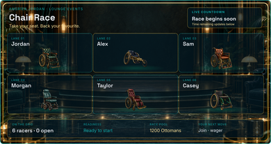
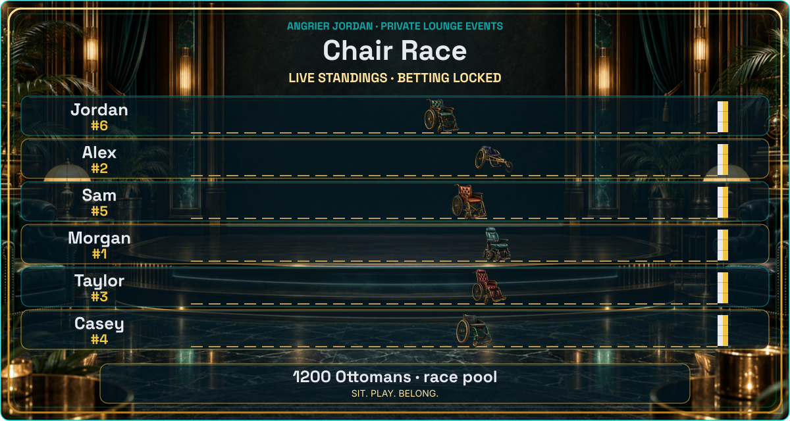
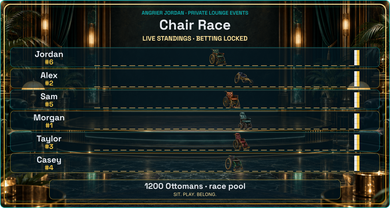
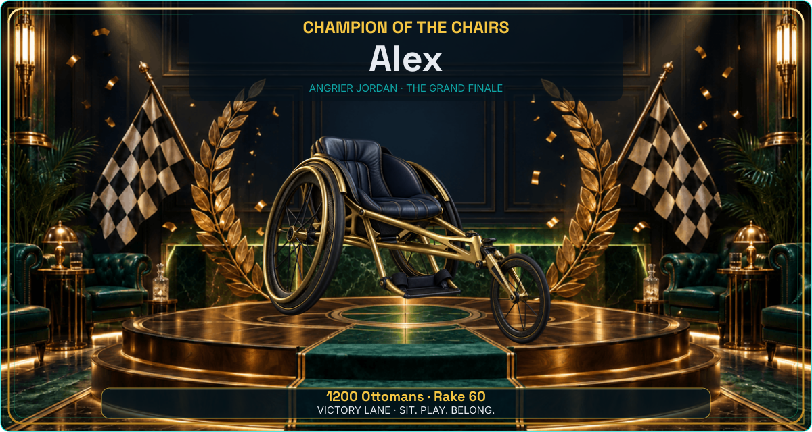
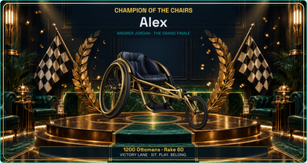
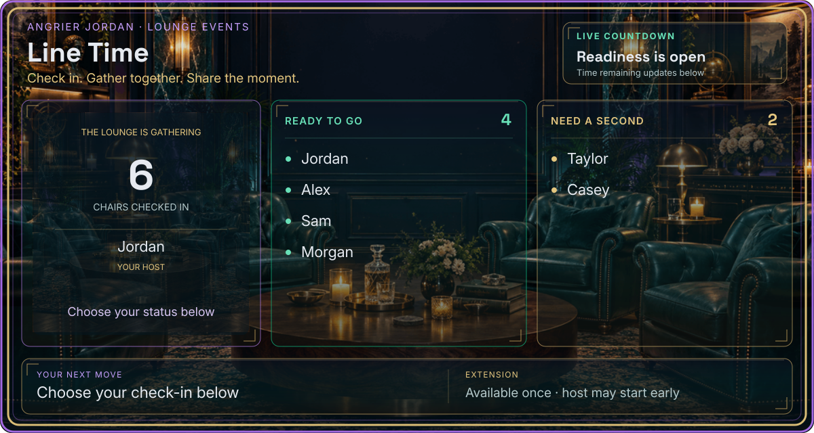
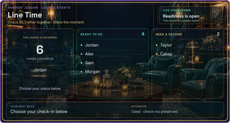
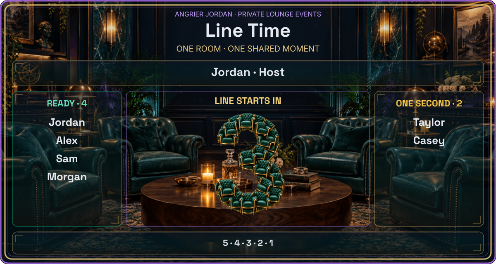
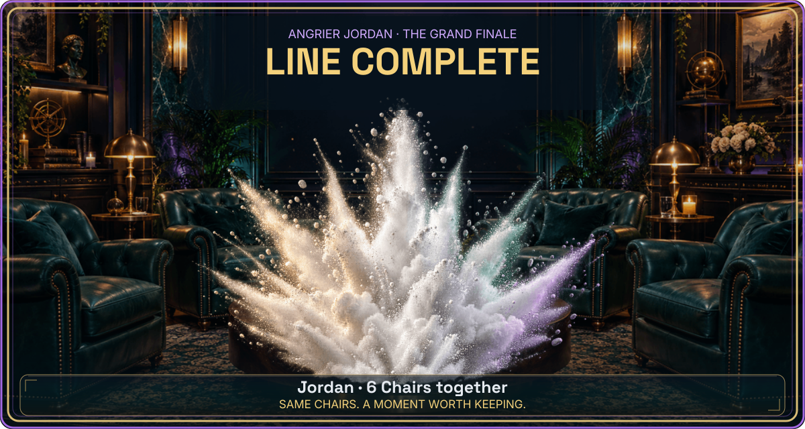

Race + Line width review
Actual 1200×640 production renderers with fictional members, shown at native desktop width and scaled to a 390px phone viewport. Discord client chrome, countdown text, and native buttons are not simulated. These are review fixtures, not live screenshots or approval changes.
race-waiting
1200px full-width attachment390px mobile-scale attachment
race-live
1200px full-width attachment
390px mobile-scale attachment
race-finale
1200px full-width attachment
390px mobile-scale attachment
line-waiting
1200px full-width attachment
390px mobile-scale attachmentline-extended
1200px full-width attachment390px mobile-scale attachment
line-countdown
1200px full-width attachment
390px mobile-scale attachmentline-finale
1200px full-width attachment
390px mobile-scale attachment